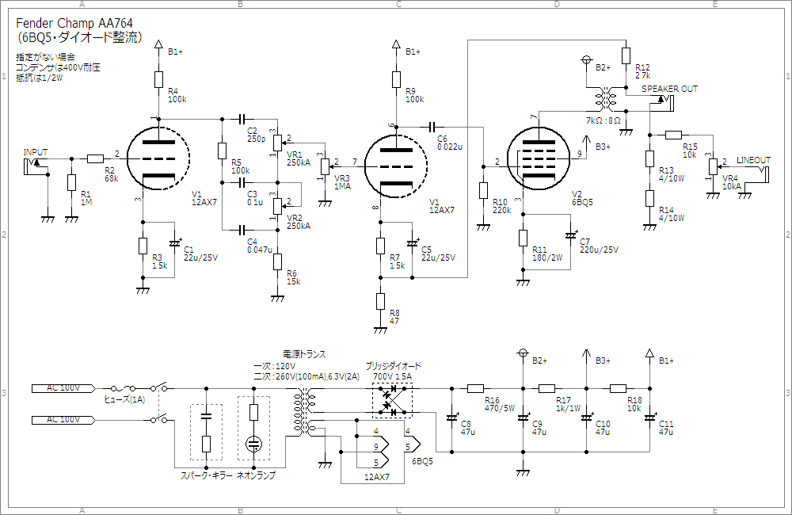

Fender Champ Amp AA764改～前編～
2010年01月11日 カテゴリー：ギターアンプ・ベースアンプ
ついに真空管ギターアンプに挑戦です。まずは回路が簡単なシングルアンプということで、（たぶん）最もポピュラーと思われるフェンダーのチャンプを作ってみたいと思います。トーン回路ありのAA764というバージョンを元にして、いろいろと変更しています。
下図が回路図です。

出力管は6V6から6BQ5(=EL84)に変更しています。あまり出力をかせぐつもりもなかったのでミニチュア管にしてみました。6V6と6BQ5では動作が違うため、6BQ5のデータシートに近い値になるように、R11の値を小さくしてC7の値を大きくしています。C7はとりあえずストックしていた電解コンデンサを使っただけなので47μF程度でもよいかと思います。
電源トランスはGarrettaudioの真空管リバ－ブ用のものです。一次側が120Vなので100Vで使うと二次側が約17%低い電圧が出てしまいます。ちょっとヒーター電圧が足りなくなりますが、まぁよいでしょう。ダイオード整流にしているので、整流後は280Vぐらいの予想です。もし他の一次側が100Vの電源トランスを使うとしたら二次側は220V(DC50mA)のものでよいかと思います。電源周りの電解コンデンサは47μFになっていますが、これは秋月電子でまとめ買いしたためです。全部22μFでもたぶん大丈夫だと思います。
出力は4Wぐらいの予想ですが、それでも自宅ではフルボリュームにはできません。「超初心者のための真空管アンプ製作講座」というサイトを参考にしてラインアウトを設けています。元の回路からいきなりいろいろ変更を加えていますが、果たしてうまくいくのか…
～後編～に進む